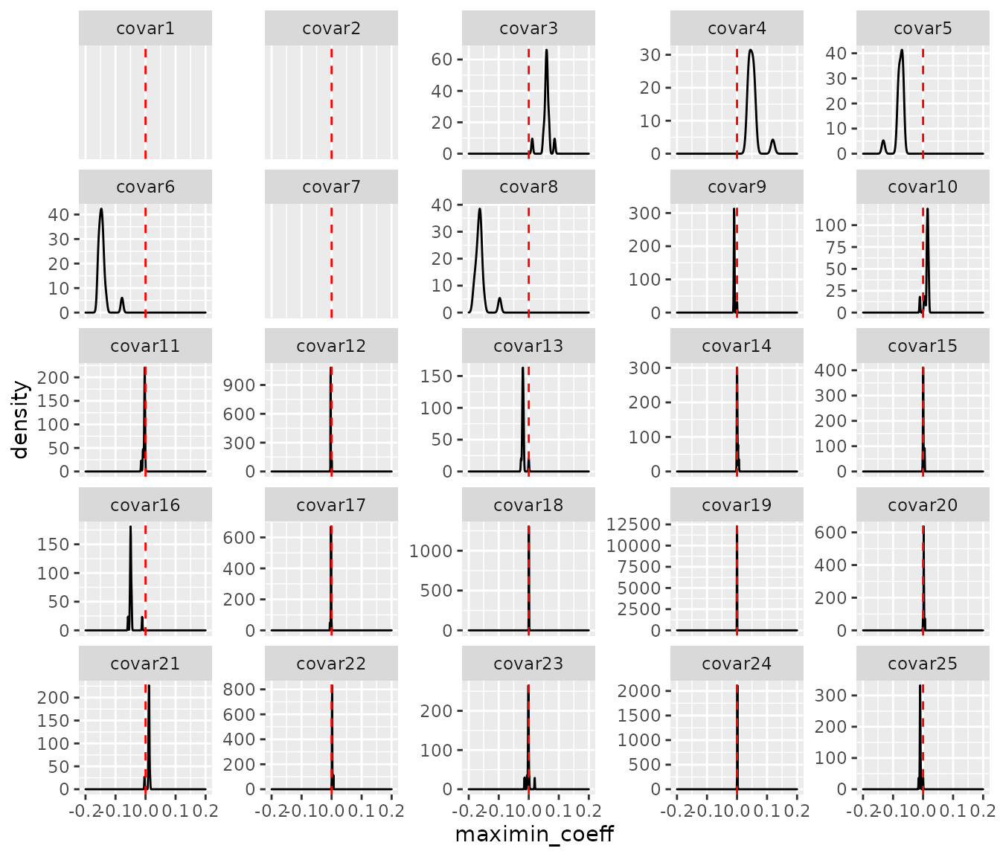

survmaximin.RmdTo illustrate the usage of the SurvMaximin algorithm, first load in the simulated data, which includes a coefficient matrix derived locally from each source site and a varable covariance matrix from one target site.
library(SurvMaximin)
data(B_source); dim(B_source)
#> [1] 25 15
data(Sigma_target); dim(Sigma_target)
#> [1] 25 25Then we fit the SurvMaximin model by calling the survmaximin function. Note that the \(delta\) parameter controls the ridge penalty with the default value as 0. The transfer-learning coefficients are saved as beta.est in the output list. Weights for each source site are stored as weight, as well.
output <- survmaximin(B_source, Sigma_target, delta=0.5)
output$beta.est
#> [,1]
#> [1,] 2.636780e-01
#> [2,] 5.528960e-01
#> [3,] 1.153801e-02
#> [4,] 1.192360e-01
#> [5,] -1.323856e-01
#> [6,] -7.834660e-02
#> [7,] -4.310746e-01
#> [8,] -9.672508e-02
#> [9,] 0.000000e+00
#> [10,] -1.075174e-02
#> [11,] -8.814115e-03
#> [12,] 5.321782e-04
#> [13,] 0.000000e+00
#> [14,] 3.290181e-03
#> [15,] 5.013197e-03
#> [16,] -5.828835e-02
#> [17,] -2.895772e-03
#> [18,] 1.339693e-03
#> [19,] 0.000000e+00
#> [20,] 3.331753e-03
#> [21,] -3.333063e-03
#> [22,] 3.040951e-03
#> [23,] -1.409748e-02
#> [24,] 1.674652e-03
#> [25,] 5.870561e-05
output$weight
#> [1] 0.58479638 0.05892942 0.00000000 0.06756831 0.00000000 0.00000000
#> [7] 0.00000000 0.00000000 0.00000000 0.08022597 0.09000053 0.04396359
#> [13] 0.04215204 0.00000000 0.03236377To evaluate the performance of the SurvMaximin model, we first import the validation dataset.
data(x.valid); length(x.valid)
#> [1] 2000
data(z.valid); dim(z.valid)
#> [1] 2000 25
data(delta.valid); length(delta.valid)
#> [1] 2000We can use Est.Cval function in the survC1 package to calculate the C statistics from the validation data set and evaluate the model performance.
valid.dat <- data.frame(`t_to_event_` = x.valid,
`death_ind` = delta.valid,
`score` = z.valid %*% output$beta.est)
c.maximin <- survC1::Est.Cval(valid.dat, tau = 5)$Dhat
c.maximin
#> [1] 0.7433596If all sites can be treated as the target site and each site demands a SurvMaximin model to be fitted, then users can first store the locally estimated coefficients in one matrix (\(p\times L\) where \(L\) denotes the total number of sites), and data covariance matrices into a list：
data(B_all); dim(B_all)
#> [1] 25 16
data(Sigma_all)
length(Sigma_all); dim(Sigma_all[[1]])
#> [1] 16
#> [1] 25 25
output <- survmaximin_fed(B_all, Sigma_all, delta=0.5)
length(output)
#> [1] 16
output[[1]]$beta.est
#> [,1]
#> [1,] 0.3037710858
#> [2,] 0.4775245024
#> [3,] 0.0861233420
#> [4,] 0.2139044058
#> [5,] -0.2610936626
#> [6,] -0.1564759896
#> [7,] -0.4658850947
#> [8,] -0.2946007823
#> [9,] -0.0113981649
#> [10,] 0.0070111543
#> [11,] -0.0144088932
#> [12,] -0.0036474729
#> [13,] -0.0256351874
#> [14,] 0.0061266944
#> [15,] 0.0054613656
#> [16,] -0.0111721845
#> [17,] -0.0055267140
#> [18,] 0.0008517773
#> [19,] -0.0001285146
#> [20,] 0.0060341509
#> [21,] 0.0120849586
#> [22,] 0.0058385248
#> [23,] 0.0197415697
#> [24,] 0.0021760373
#> [25,] -0.0148486143
output[[1]]$weight
#> [1] 0.09415249 0.00000000 0.05996628 0.00733774 0.00000000 0.00000000
#> [7] 0.00000000 0.01096313 0.12935355 0.14112495 0.09401698 0.06373866
#> [13] 0.00000000 0.09032024 0.30902598To visualize the estimated results and inspect the sparsity of the estimators, we show the density plot for the survmaximin coefficient of each covariate from all sites as below.
library(ggplot2)
beta.all = c()
p = 25; L = 16
for(i in 1:L){
for(j in 1:p){
beta.all = rbind(beta.all,
data.frame(`variable` = paste0('covar',j), `site` = i, `maximin_coeff` = output[[i]]$beta.est[j]))
}
}
beta.all$variable = factor(beta.all$variable, levels = paste0('covar', 1:25))
ggplot(beta.all, ggplot2::aes(x = maximin_coeff)) +
geom_density() +
xlim(c(-0.2, 0.2)) +
geom_vline(xintercept = 0, col = 'red', linetype = 2) +
facet_wrap(.~variable, scales = 'free_y')
#> Warning: Removed 51 rows containing non-finite values (stat_density).